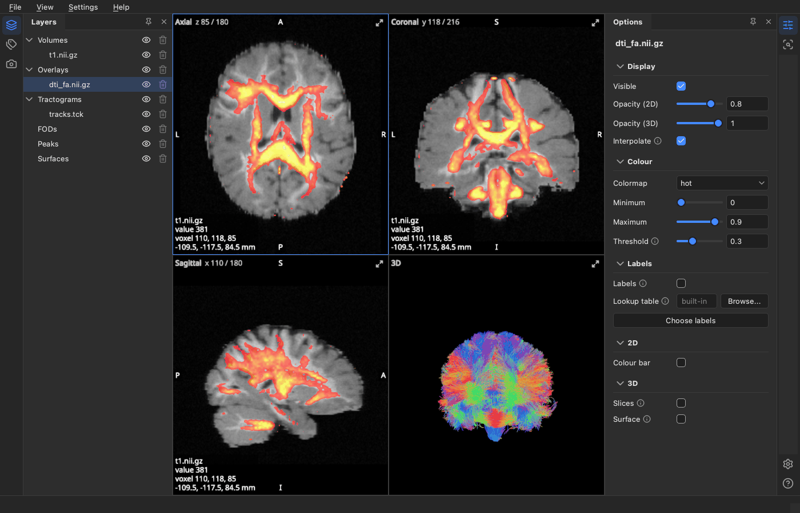

Getting started#
BrainViewer, Larmor’s viewer, shows brain images, tractograms, fibre orientation distributions (FODs), peaks and cortical surfaces in three 2D views and a 3D view. This guide shows how to open files, how to install the viewer on its own, and how its window is laid out.

The pictures in these guides show the simulated brain of the ISMRM 2015 Tractography Challenge (Maier-Hein et al., Nature Communications 8 (2017) 1349; https://doi.org/10.5281/zenodo.572345, CC BY 4.0): its T1-like image, and the DTI maps, FODs, peaks and tractogram that Larmor made from its diffusion data. The data has no FreeSurfer surfaces or parcellation, so the tissue labels and surfaces shown were made from simple masks of the T1-like image.
Opening files#
The viewer sorts what it shows into seven categories: volumes, overlays, tractograms, FODs, peaks, surfaces and regions. Files open into the first six, and each way of opening them decides which category they go into; regions are drawn in the views instead (see Tractograms).
From the command line, give each file after the option of its category:
lar bv -v t1.nii.gz -o mask.nii.gz --tracts tracts.tck -f fod.mif -p peaks.nii.gz. The options are-vfor volumes,-ofor overlays,--tractsfor tractograms,-ffor FODs,-pfor peaks and--surfacesfor surfaces, and you can repeat an option to open several files. Files given without an option, as inlar bv t1.nii.gz tracts.tck, are sorted by their names: tractograms go to Tractograms, a session (.lar.json) is opened, other.jsonfiles (such as BIDS sidecars) are skipped, and everything else goes to Volumes.From the file manager, once the launcher is added (see below), open a file with BrainViewer or, on macOS, drop it on the viewer’s icon in the Dock.
With File > Open (Ctrl+O, Cmd+O on macOS), choose the files. The file type you pick at the bottom of the dialog sets their category.
Drag files onto a category’s row in the scene tree, or onto one of its items. Every category shows while you drag, the rows that would take the files are highlighted, and files the category cannot read are refused.
From Python, run
from larmor.viewer import view, thenview(volumes="t1.nii.gz", tracts="tracts.tck").
Images are read from NIfTI (.nii, .nii.gz) and MRtrix (.mif, .mif.gz, .mih) files, and tractograms from
.tck, .trk, .vtk and .fib files, gzipped or not. Files are read in the background, and the status bar
shows the progress with a Cancel button. A tractogram with more streamlines than the read limit (1,000,000 by
default, see Settings) is reduced to a random subset of that size, and the same file always
gives the same subset.
Installing it for the viewer only#
If you only want the viewer, install Larmor as a tool of its own with uv. uv also
installs the Python version Larmor needs and puts the lar command on the PATH:
uv tool install "larmor-dmri[viewer]"
pipx install "larmor-dmri[viewer]" works too, as does pip install "larmor-dmri[viewer]" in an environment
of your own. Until Larmor is on PyPI, install it from a clone of its repository by running the command below in
the clone. This compiles Larmor’s C++ module, so it needs a C++ compiler, which you get on macOS with
xcode-select --install.
uv tool install ".[viewer]"
Starting it from the desktop#
The launcher lets you start the viewer from the desktop and open files with it from the file manager. Add it once, from a terminal:
lar bv --install-launcher
The launcher starts the Larmor install that ran this command, so run the command again after you move or reinstall Larmor. What it adds depends on the system.
On macOS it adds
~/Applications/BrainViewer.app, which shows in Launchpad and Spotlight. To keep it in the Dock, use Options > Keep in Dock. Finder’s Open With offers it for.nii,.nii.gz,.mif,.mih,.tckand.trkfiles, and, because macOS matches only the last part of a file name, for every.gzfile too.On Linux it adds a BrainViewer entry to the application menu (
~/.local/share/applications/larmor.brainviewer.desktop), its icon, and the file types it opens, so that the file manager offers it for NIfTI, MRtrix,.tckand.trkfiles. You can pin it to the dock or taskbar from the menu.On Windows it adds a BrainViewer shortcut to the Start menu, which you can pin to Start or the taskbar from its right-click menu. Files dropped on the shortcut open in the viewer, but Explorer’s Open With does not list it.
.vtk and .fib tractograms are not registered with the file manager, because many programs use .vtk; open
them from the command line or with File > Open.
The launcher never writes over a file it did not add. If another file is already in its place, such as a
BrainViewer.app from another program, it stops and names that file, so you can move or remove it first.
lar bv --uninstall-launcher removes exactly what was added, lists each file it removes, and removes the folders
it made once they are empty. To remove the viewer itself, remove the launcher first and then the tool:
lar bv --uninstall-launcher
uv tool uninstall larmor-dmri
If you installed with pipx, use pipx uninstall larmor-dmri instead. Only the viewer’s settings are then left,
in ~/Library/Application Support/larmor (macOS), ~/.config/larmor (Linux) or %APPDATA%\larmor (Windows).
Delete that folder too to leave nothing behind.
Workspaces#
The window has two workspaces, which the switch at the left of the header chooses. View (Ctrl+1, Cmd+1 on macOS) shows the scene tree on the left of the views and the inspector on the right, and is where you look at images, tractograms and the rest. Simulate (Ctrl+2) shows the steps of a phantom on the left and the page of one step on the right, as Phantoms explains. View > Workspace switches between them too, and a session remembers the workspace it was saved in.
The header also names what is open, the session’s name or else the main volume’s file, and has Export… (see Exporting images and videos), the gear that opens Settings and the question mark that opens this help (F1). In Simulate it also has Run, which is greyed out until the phantom can run.
Below the header, a toolbar holds the pointer tools of the workspace, each with its key: in View the Cursor (V), which moves the crosshair, the Sphere ROI (O) and Box ROI (B) tools, and the Zoom box (Z); in Simulate the Cursor and Draw bundle (N). Next to them are the three layouts of the views: 2 x 2, 1 + 3, which shows the selected view large with the other three stacked beside it, and 1, which shows the selected view alone. The Crosshair (X) and Overlay (I) switches on the right show or hide the crosshair and the text over the views.
Ctrl+0, or Hide or show the side panels in the View menu, hides the panels either side of the views and brings them back. You can drag the edge between a panel and the views to make it wider, and the viewer remembers the widths; Reset the panels’ layout in the View menu puts the panels back as they were at first start.
The scene tree#
The scene tree, on the left of the View workspace, lists the loaded items (each file or object you opened) by category: Volumes, Overlays, Tractograms, FODs, Peaks and Surfaces. A category shows only while it has items, and every category shows while you drag files over the tree, so that you can drop them on the one that should read them. Each row has an eye, which shows or hides the item, the item’s name, with its file as a tooltip, and a short note on its state: an overlay’s colormap and threshold, an FOD’s basis, or how many of a tractogram’s streamlines its regions keep. A category’s eye acts on all its items.
The Delete key removes the selected item, or every item of the selected category after asking. Shift-click or Ctrl-click (Cmd-click on macOS) selects several items, which Delete then removes together after asking. An item’s right-click menu has Remove, Save As… and Rename. Below the tree, Open files… opens files and Session opens or saves a session (see Sessions).
The inspector#
The inspector, on the right of the View workspace, has three tabs. Item shows the options of what is selected in the scene tree. Select an item to change that item alone, or select a category to change all its items at once; where the items differ, a field shows “mixed”. The options come in sections, such as Display, Colour and 3D. Click a section’s title to fold it away; it then stays folded for that kind of item. Options marked (2D) or (3D), or in a 2D or 3D section, apply to those views only, and options that do not apply to the item as it is shown, such as a colour while it is coloured by direction, are hidden.
Cursor lists what each visible item holds at the crosshair, such as an image’s value or a parcellation’s label. It also shows the FOD at the crosshair as one large glyph (see FOD glyphs) and the labels of a parcellation to draw in 3D (see Parcellations).
Scene sets how the views show the scene: the display convention, the background and crosshair colours, whether new images start smooth, whether the crosshair shows, the layout of the views and the position of the 3D camera.
The four views#
The axial, coronal and sagittal views each show a slice through the crosshair, and the 3D view shows the whole scene in 3D. The 2D views and The 3D view explain how to use them, and Help > Shortcuts lists every key and mouse control.
Agents#
An agent, such as Claude Code, can drive the viewer through the Model Context Protocol (MCP). The agent then loads files, changes options, moves the cursor and takes screenshots while you watch. Driving the viewer from an agent shows how to connect one.